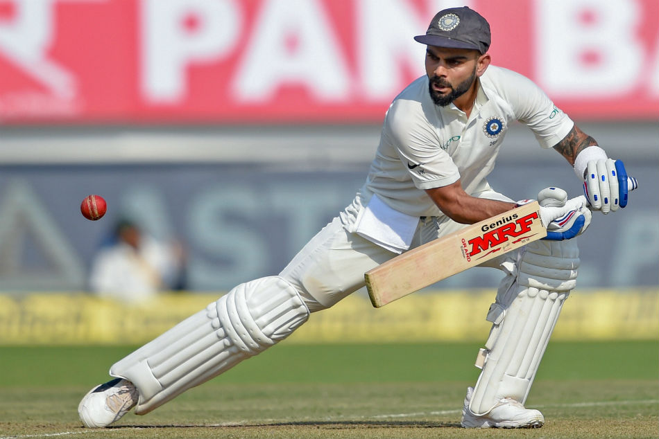
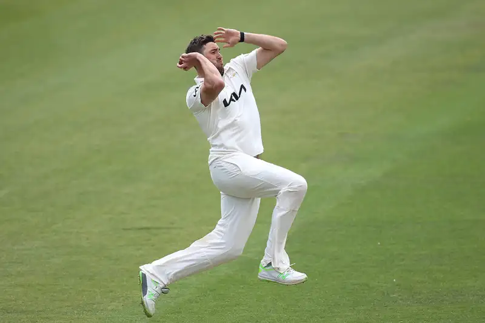
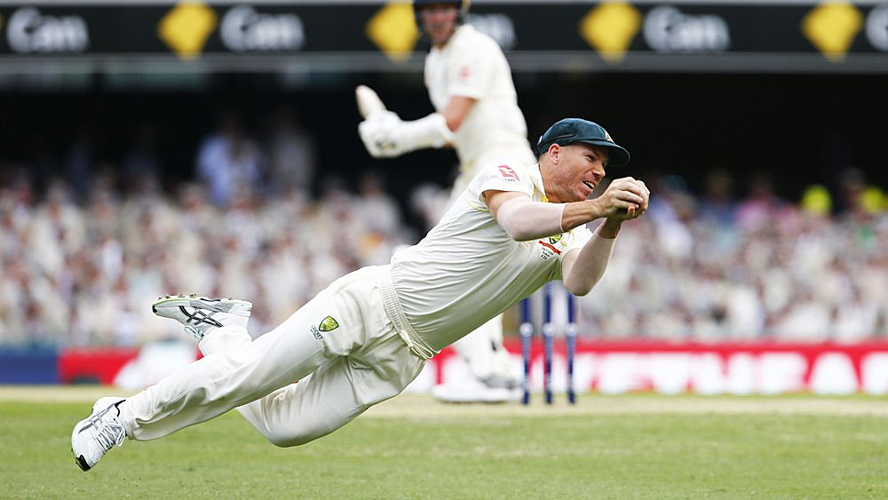
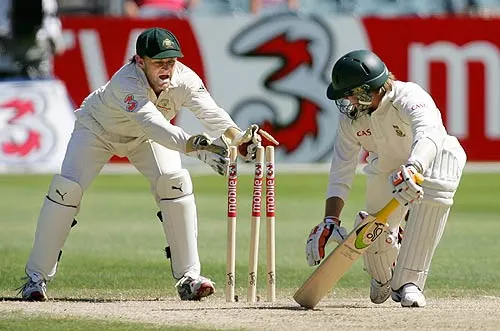

Batting
Learn fundamentals of batting and basics of playing against
different kinds of bowling from experts.

Bowling
Learn fundamentals of bowling and basics of different kinds of
bowling from experts.

Fielding
Fitness tips and fielding hacks from experts, which will surely
help to become great fielder.

Wicket-keeping
Learn and understand wicket keeping mantras from experts.